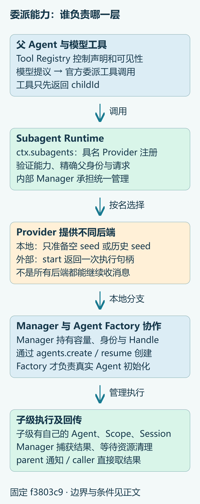
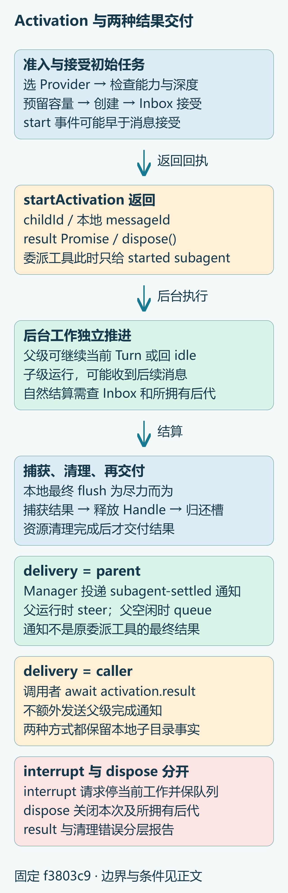
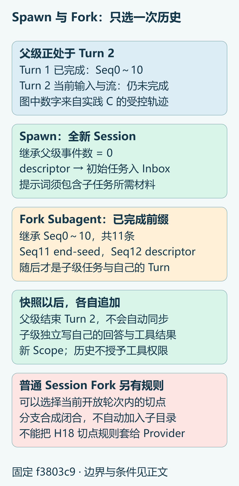
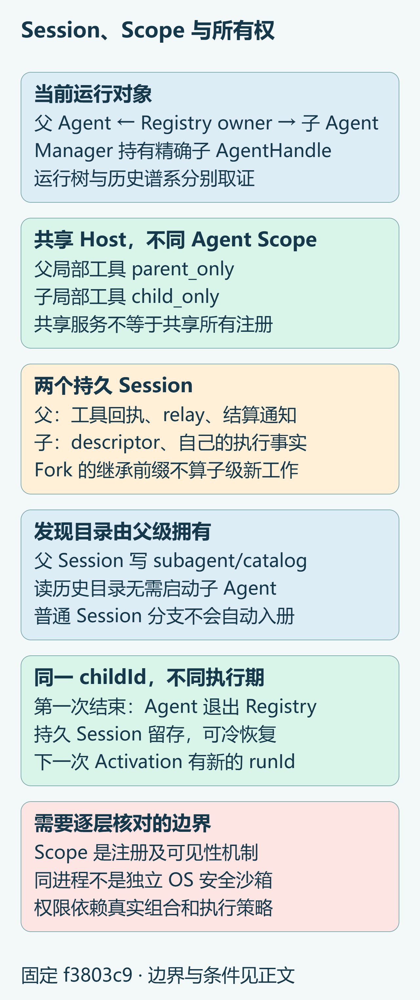

H21 作者审阅页 · 未发布。实际 LessonMarkdown 的静态渲染，折叠答案可展开；课程版本的复制交互已另经 React 挂载测试。图片在本页映射为相邻文件，不改变教材的 /course-media 路径。
Subagent、任务委派与多智能体协作
180～250 分钟（分三段；作者估计，真实试读及环境准备另计）
一个项目，两份调查，谁来收尾？
项目研究助手收到：“请分析这个项目的架构，同时检查测试体系并总结潜在问题。”它可以先研究架构，再研究测试，最后综合。现在假设测试分析需要读许多材料，适合交给另一位助手；父 Agent 继续整理架构，子 Agent 专门检查测试。
先想一条具体轨迹：父级调用委派工具，拿到一个子级 ID；此时子级还在工作。子级完成调查，把“测试数量、覆盖缺口和证据限制”发回来，父级据此继续。这里多出的问题是：子级是否知道此前讨论？能用什么工具？谁支付额外模型请求？父级取消后谁负责等待？这些问题决定委派能否正确结束。
Delegation（委派）就是把一个有边界的任务交给另一个执行实体，并建立结果与退出责任。Subagent 是在这套协议下接受委派的 Agent。它不像普通函数那样只有一次调用栈和一个返回值：它可以有自己的对话、工具选择、多个 Turn，也可能在父级结束当前 Turn 后继续工作。用主编派记者核查资料作类比很直观，但软件中的共享进程、工具权限和句柄所有权仍须单独核对。
更多 Agent 不保证更快、更便宜或更正确。 分工带来独立上下文和可能的并行，也增加启动、提示词、消息、重复调查及综合成本。任务很小、材料高度耦合或权限难以划分时，让同一个 Agent 继续，往往更容易管理。这是我们的工程分析，不是源码提供的性能结论。
本课遵循正式蓝图标题《Subagent、任务委派与多智能体协作》，与任务暂定标题有差异，记录在作者报告中，未修改蓝图。源码继续固定 f3803c96974ad4a94195fb97e5c637e9c2a3afe3。我们先理解一个父子任务，再读服务和生命周期，之后比较 Spawn/Fork，最后加入消息、发现和限制。Agent Teams 只介绍边界；Workflow、Jobs、Goal、Schedule 留到 H22。
用五分钟接回已经学过的对象
H09 中，Agent 是当前能收输入、驱动工作和被查询的运行对象；AgentHandle 则包含释放这个确切实例的 dispose()。Agent Factory 负责创建或恢复；Registry 负责实时登记和所有权查询。H17 的 Session 记录对话和执行事实，H18 的持久化允许重建新实例；旧 Promise、控制器和进程句柄不会因此复活。H20 的取消是合作信号，whenIdle()等待活动收敛，不能证明业务成功或磁盘耐久。
在这个基础上，Activation（一次激活）是委派管理器掌管的一个子级执行期。可以先想成一次“派工及收尾的责任单”：它持有子级身份、结果承诺和本次释放入口。但它不是普通数据库工单，内部还有实时容量、后代所有权和执行资源。一个持久子会话可以先后经历多个 Activation。
| 对象 | 本课案例中的作用 | 不可互换的边界 |
|---|---|---|
| Agent | 当前实际研究测试的运行实体 | Session 留存不证明它还在运行 |
| Session | 保存这条调查线的历史 | 历史父 ID 不等于当前父 Agent 对象 |
| Tool | 模型可提议调用的一项能力 | 委派工具只是消费委派服务的入口 |
| AgentHandle | 释放精确运行实例的能力 | 查询到裸 Agent 不自动得到 Handle |
| Activation | 管理一个执行期及结果交付 | 旧 Activation 结束不等于永远不能继续该子会话 |
Lineage（谱系）在这里描述历史关联，例如子 Session 的 parentSession。必须把它与 Registry 中传入的 parentAgent、结构 Fiber、Handle 持有者和 Activation 所有权分开。仅根据 Session 名称、父 ID 或 origin 字样，不能推断当前完整运行关系。S17 · childSessionMeta S37 · Registry ownership
一项可选能力，分成几个角色
H05 已说明“包存在、类型能导入、服务已注册、模型工具可见”是不同事实。Subagent 也遵守这条规则：ctx.subagents 是委派服务入口，具体类为 SubagentRuntime。它维护具名 Provider，并在 agents 服务出现后建立 Manager。只装这项服务，还没有向模型开放委派。S01 · SubagentRuntime
Provider（后端提供方）回答“这次用哪种方式建立子级执行”。多个后端可以同时注册为 spawn、fork 或其他名称，请求按名字选择。SubagentCapabilities 则声明是否支持 Agent 选项、独立 Preset、结构化输出及深度限制；服务不会因为字段名字看起来合理就忽略不支持的选项。S03 · startActivation S04 · assertCapabilities
Manager 是 Runtime 内部的管理者，负责本地 Agent 创建与恢复、输入接受、Activation、共享容量、后代清理和交付。对于本地子级，Provider 的 prepareContinuable() 只交回创建数据：Spawn 返回空对象，Fork 返回选好的历史 seed。真实 Agent 仍由 Manager 调用 ctx.agents.create() / resume()，经 Factory 创建。Agent Factory 与 Subagent Runtime 不是同一个服务。 S12 · materializeTracked S13 · SpawnInProcessProvider S14 · completedTurnPrefix / prepareContinuable
图一先看职责关系；完整启动时序要等后面的图三。

模型可见的 dsh-tool-subagent 是 Consumer。它绑定一个 Provider，使用真实 Tool Registry、Scope 和 Step 准入机制。Provider 出现时登记工具，消失时撤销；工具描述会根据是否继承父上下文改变。配置中的模型选择仍要经过消费方策略及路线预检，不能因 Provider 支持 agentOptions 就宣称模型任意换路由。S05 · registerProvider S06 · mount / defineTool
从模型提议，到初始任务被接受
下面是公开 API 的用法片段，前提是 ctx 和确切在线的 parent 已由公共准备建立；它不是单独可运行的全部程序。
const activation = await ctx.subagents.startActivation({
provider: 'spawn',
label: '检查测试体系',
request: {
parent,
prompt: [{ type: 'text', text: '只分析提供的虚构测试清单，报告缺口。' }],
maxDepth: 1,
},
signal: startup.signal,
delivery: 'caller',
})
const result = await activation.result
await activation.dispose()预期先得到包含 childId 的 Activation；本地还带有初始 Inbox 的 messageId。await result 才等待最终结果。在模型工具主线中，消费方选择 delivery:'parent'，拿到启动回执后直接返回 {kind:'activation', subagentId}，并不在工具调用内部等待整项调查完成。S07 · execute startActivation
顺着输入、处理、输出和失败读启动链：
- Runtime 按
provider查后端；不存在就NO_PROVIDER。检查请求能力与输出 Schema，并核父级是 Registry 中的同一个在线对象。 - 本地 Manager 核准入，选择初始目录，计算子深度，捕获模型选项、组合及委派策略。Parent Delivery 需要持久化；Caller Delivery 可使用临时本地会话。
- Provider 贡献空 seed 或已完成前缀。Manager 进入物化阶段，在创建/恢复前预留容量，再通过 Factory 创建新 Session、Scope 和 Agent。
- 创建窗口写自身 descriptor 与可用的委派策略，组合子级能力；本地 start 生命周期边在驻留后发出。初始任务随后进入真实 Inbox。
- 接受成功后，把本地成员事实写入父 Session 的
subagent/catalog，启动结算观察，再返回childId/messageId。
具体顺序见 S08 · startLocal S09 · startLocal acceptance S10 · materialize。subagent/start 是观察边，可能先于初始消息接受；听到它不能替代 startActivation() 成功返回。发布前失败可能有部分资源和已观察的边，必须按所在阶段清理。名称、能力、深度或容量失败，通常发生在接纳之前；不能把所有失败都描述成“子级已经开始调查”。
第一段停点： 合上类型文件，只说清四句话：工具发起什么，Runtime检查什么，Provider贡献什么，谁持有子 AgentHandle。预计35～45分钟；能解释“工具回执不是最终答案”后再进入生命周期。
子级工作结束，结束的是哪一层？
childId 是子级的稳定身份，本地就是子 SessionId。messageId 标识某条已接受输入；SubagentRunId 标识一次执行期的生命周期配对。继续同一个冷子会话时，childId 可以相同，Agent 对象与 runId 会不同。S35 · createActivationObserver
本地自然结算不只检查 status==='idle'。Manager 还检查未领取输入、所拥有的后代及同一子级锁下的状态；有停放输入或未释放后代时，Activation 可继续驻留、继续占容量。最终 flush 后还会复查，避免把刚进入的消息漏掉。S20 · settlementState
SubagentResult 含 output、stopReason，可选 structured 和安全的 diagnostic。本地输出按本执行期后缀选择最后一条非空 Assistant 内容；失败可带部分输出。completed、aborted、error、max-tokens、refusal 的含义不同，不能把正常控制流结束解释为调查结论正确。S24 · captureLocalResult
正常结算先捕获结果，再释放 Handle、归还容量、处理父级通知、发终态生命周期边，最后结算 Activation 的结果 Promise。结果捕获故障可使 Promise 拒绝。清理失败则另由 dispose() 报错，生命周期 end 标为 error，而已经捕获的结果及父通知仍可保留执行结果；不要只读其中一条通道宣布全面成功。S21 · finishDisposal
图三把“启动回执”和“最终交付”分开，实线表示精选时序；两种 delivery 是选择关系。

Parent 与 Caller，谁在等待什么？
Parent Delivery 由 Manager 在结算后投递 source.kind='subagent-settled' 的 user-role 通知。父级正在工作时走 steer，空闲时走 queue；下一次实际模型请求才消费这些输入。父级缺席或同 ID 下已换成另一个实例时，不向新对象冒投通知。投递异常记录警告；没有持久父邮箱和通用恰好一次保证。S22 · notifySettlement
Caller Delivery 由程序调用者直接 await activation.result，不额外产生父级完成通知。两种 delivery 的本地子级都会进入父目录。 外部 caller 执行的成员关系则由调用者管理；不能从一个分支推广全部后端。S30 · catalog projection / establishCatalogChild
子 Agent 通过 send_message 发给父级的是 agent-message，属于它选择发送的内容；subagent-settled 是 Runtime 对结局的说明，归属不同。若子级最后一个相关动作是给父级发消息，此后未领取输入、未再记录工具调用，完成通知会用“closing message is omitted”提示省略收尾文本，减少重复；结构化值及诊断依适用分支另外附加。没有调用控制工具的子级仍可通过完成通知回传收尾文本。S34 · createSettlementMessage
想深入再看：补充：结果可取得，不等于未来一定能恢复
本地自然结算的最终 sessions.flush 是尽力而为，失败记警告，持久前缀可能陈旧；随后 Handle 的关闭仍可能报告自己的清理失败。Result、通知或 end 不是任意介质的耐久认证。Parent Delivery要求持久化组件存在，也不等于每条通知已持久写入父级：通知要先被Inbox接纳，后续还受父级处理和存储边界约束。S23 · flushFinalState
结构化 Schema 是一次 Activation 的结果契约，不作为永久子级设置。历史 descriptor 不保留该 Schema 或本次 maxTokens；冷恢复不能假定自动带回它们。本课未执行结构化捕获及flush故障专项，相关规则按固定实现静态审阅，不能算入动态通过数。
Spawn 与 Fork：子级究竟拿到哪些材料？
Spawn 适合独立调查：“这里是三份虚构测试清单，请统计未覆盖项。”它创建新 Session，不复制父对话；任务必须自足。inheritsParentContext=false 的描述只指对话历史，不表示完全没有共享服务或工作目录。S13 · SpawnInProcessProvider
Fork Subagent 适合建立在已讨论内容上的研究：“沿用已确认的架构约束，另查测试风险。”固定 Provider 查父日志最后一个 turn/end，取从 Seq0 到该事件含切点的连续前缀；当前尚未完成的 Turn 不进入。没有任何已完成 Turn 时返回空创建数据。S14 · completedTurnPrefix / prepareContinuable
实践 C 的父级第一轮完整日志为 Seq0～10，第二轮已经开始。Fork 子级继承11条；随后 Seq11 是继承标记 session/end-seed，Seq12 是自身 subagent/descriptor，然后才接受新任务、打开自己的 Turn。并不是把父级当前尚未配对的工具调用带走，再等父级以后补结果。

这份 seed 成为子 Session 自己的初始历史。父级之后结束第二轮，子级不会偷偷追加那些新事件；子级写自己的消息、工具事实和结束边。冷恢复读取已经保存的子日志，而不是重新向父级取最新快照。
普通 ctx.sessions.fork() 不等于 Subagent Fork。 H18 的普通分支 API 允许选择合法历史切点，固定实现可以为开放尾部生成闭合记录；它没有因此建立 Agent、Activation、Provider 关系或父级子目录成员。H21 Provider主动选择已完成Turn前缀，其选择规则更窄，不能套用普通Fork的开放尾规则。S36 · SessionStore.fork
想深入再看：补充：创建选项与实际请求路线分别取证
resolveChildAgentOptions 合并父级当前路线和请求覆盖，并写子深度。它证明传给Factory什么，不单独证明后续Adapter实际收到什么。继承历史可能带已有请求基线，实际请求仍经H11的模型选择与准备链。实践C保留继承路线，只验证历史；不把该实验冒称“已验证更换Fork子级模型”。早期夹具把两者混用，导致脚本耗尽，失败记录保留。S16 · parentAgentOptionsForDelegation / resolveChildAgentOptions
本课Spawn实验与综合实验使用已配置的两条受控模型路线。Provider声明支持模型配置，不代表模型能任意选真实付费路线，更不证明缓存或费用改善。
同一宿主，为什么父子能看到不同工具？
H13 的 Agent Scope 控制注册归属与可见视图。父子 Agent 各有自己的 Scope；共享 Host 服务，不等于子级沿用父 Agent Scope 的全部局部注册。综合实验父级有 parent_only，子级在自己的创建通知中登记 child_only：父级看不到 child_only，子级也看不到父级的局部工具。模型声明和执行资格继续经过H13/H14的真实链。
Preset 是可复用能力组合。本地省略选择时，若组合了 Preset Registry，子级加入父方当前代际；Spawn支持显式选择独立Preset，Fork不支持该选项。它不是把父级所有局部闭包复制一遍。本课不展开完整Preset系统，真实独立Preset挂载仅静态阅读官方实现及测试。S18 · applyChildComposition
权限也要看具体分支。固定本地实现会捕获实际组合中的权限状态：父级显式 sandbox override、适用权限模式，以及审批服务存在时的 never 固定策略。它不把所有部署默认、一次性批准或任意父局部限制无差别复制。相关策略事件写在继承前缀之后，使子级自己的状态可重建；是否能执行仍取决于工具组合、执行策略、权限及真实沙箱。S19 · delegated policy capture / append
Agent Scope 是注册与可见性机制，不是独立操作系统沙箱。 进程内子级仍运行于同一宿主进程；可信插件可持有宿主能力。不能因名字叫“子 Agent”就默认安全，也不能只靠提示词里的范围声明阻止危险操作。实验只装常量工具，不拿本课成功替代H15安全验证。

第二段停点： 交出一张两列历史表和两个工具集合，解释为什么“继承完整已完成对话”仍不能推出“继承所有权限”。预计45～60分钟；下一段才引入继续消息、限制和发现。
消息被接受，与目标已经回答
ctx.subagents.sendMessage(sender,targetId,content,{signal}) 返回 MessageId。模型工具 send_message 把它包装为 {messageId}，只证明相关输入已接受。正在运行的本地目标通过 steer 在最近Step边界接纳，空闲目标可启动新Turn。Agent正在等待一个模型流时，消息可以先进入 Inbox，而目标尚未生成回答。S25 · sendMessage S26 · submitAdmitted
授权以确切在线 sender 为起点。父级可向直接可继续子级发消息；驻留本地子级可以向在线直接父级发送。兄弟、非相邻后代或只有历史父ID的Agent，不能据此冒用相邻权限。祖先能中断更深后代，也不等于能向它直接发送消息。
冷子级已没有活跃 Agent 时，父级发送继续消息会通过 Session Query 观察持久子日志，核直接父关系，排除继承前缀后读取自身 descriptor，再调用 Factory 恢复新 Agent。恢复不重新调用原 Spawn/Fork Provider；原Provider已撤注册也可按持久描述恢复。旧 Activation 的 dispose()只指向旧执行期，不能误删同childId的新实例。S27 · coldResume
想深入再看：补充：冷恢复能恢复什么，不能恢复什么
子级支持的 descriptor 版本、模式及组合必须有效；未知版本或一次性模式不授予继续能力。独立选择Preset的历史还要按自身事件顺序恢复选择，缺失配置不能悄悄换成父级默认。没有Session Query或持久源不可读时，相关操作拒绝。
这些是新实例重建，不是旧控制器复活。运行中的Inbox、内存所有权图及跨进程协调另有边界；消息接受也没有自动的持久邮箱或恰好一次保证。中断收敛期间接受的消息可能继续排队，直到另一条唤醒发送。实验只验证同进程内新Agent与writer，以及另一个新Context的历史发现，未验证跨进程冷续跑。
深度和容量：两个独立问题
固定Runtime配置默认 maxDepth=1、maxActiveSubagents=8。工具未显式给深度时调用 resolveMaxDepth读取当前Host值；工具显式数值或 provider-managed优先。Host用户设置覆盖插件组合配置，这是固定配置机制的规则；本课实验用明确的Volatile配置cell提供数值，不把它当Host设置UI或完整覆盖链已跑通。直接调用服务的请求深度是可选项，不会因Runtime默认1就自动补入每个请求。S02 · resolveMaxDepth
深度计算为父深度加1，再与绝对cap比较。cap为1允许根的直接子级，但不意味着只能创建一个子任务。多个先后完成的直接子级仍都在深度1。持久header的depth是单调下界，恢复后不能假装回到根来绕过限制。S15 · resolveChildDepth
容量限制的是共享Activation池内同时驻留或正在物化的子级。根父级不占槽，连续本地父链接下的子树共享池；冷恢复也先预留，驻留输入复用槽。等待后代、停放Inbox及正在释放的Activation仍可能占槽，释放资源后才归还。历史Session累计数量和Token用量都不是这个计数。S10 · materialize S11 · ActivationPool.reserve
容量满时抛 ACTIVATION_LIMIT_REACHED，不是默认无限排队。假设容量1，子级A已占唯一槽，又请求B并等待B；若B排队等A释放，而A等B完成，便相互等待。立即拒绝允许调用者调整分工、复用现有Agent或等其它工作结束。调大配置可接纳更多；调小不强杀已有工作，只影响下一次准入。
interrupt、cancel 与 dispose：按阶段说明责任
interrupt_agent 返回 {accepted:true} 时已经发出中断请求，目标可能仍在退出。对本地子级，Manager调用 cancel(...,{keepInbox:true})：保留尚未领取的队列和已发布后代，已领取的工作不会自动退回。对子级的一次性外部执行，则中止并启动释放，不能期待后来继续输入。S28 · interrupt S29 · control tools
Activation.dispose()关闭这次执行期的准入，停止当前工作，等待其所拥有的子级和正在建立的后代，再等待本地idle、处理结果及资源释放。drainDescendants是宿主按确切父对象关闭该范围的新准入并清理后代的入口。不要只给父Agent发一次cancel，就写成全部后代立即停稳；H09普通父Handle也没有自动安装整套委派协议。S21 · finishDisposal S38 · Factory teardown
| 阶段/入口 | 最终由谁负责 | 可观察的边界 |
|---|---|---|
| 尚未接受的启动 | 调用方signal、Manager和Provider各自清理已取得部分 | 启动拒绝，不把它当成功Activation |
| 成功启动返回后 | Manager持有执行；调用者用本次dispose要求取消 | 原启动signal后来abort不等于已停止 |
| sendMessage接受之前 | 此次消息操作signal | 取消可阻止接受/冷物化 |
| sendMessage接受之后 | 目标的Inbox与执行期 | MessageId不是回答完成Promise |
| interrupt本地 | 目标Agent当前活动合作退出 | 回执先返回；未领取队列与后代保留 |
| dispose/drain | Manager与具体Handle/外部run | 等资源释放，清理故障仍须报告 |
想深入再看：固定版本差异：不要把一条signal注释当全程保证
SubagentStartRequest.signal的接口注释称它是启动前后统一取消通道；而ActivationSpec及包说明把它限制为发布前，发布后由dispose负责。实际Manager在外部start完成后移除启动转发监听；本地创建成功后也不把初始signal当永久执行控制器。实践B的post-accept-abort与C级外部句柄夹具证明：启动已接受后，原signal取消不等于停止执行。
所以教材按阶段说：启动前signal负责撤回；成功返回的Activation由Manager管理，用dispose控制这个执行期，interrupt只要求停止当前工作。这里的“外部句柄夹具”不创建外部进程，只验证真实Manager的外部分支，不能冒称ACP/Codex已验证。完整差异和原始失败见作者报告。
活跃名单与持久目录，分别回答什么？
父级需要保存子级发现信息，才能在它退出实时表后继续定位已做的调查。创建本地子级时，父Session记录 subagent/catalog；子Session记录自身 subagent/descriptor。Descriptor是日志事实，不进入普通模型Surface；目录记录成员关系，不承担当前执行状态。继承来的目录事实不会自动变成新子级自己的成员。S30 · catalog projection / establishCatalogChild S31 · snapshot / foldSubagentDescriptor
listChildren(parentId)点读父投影；listDescendants(rootId)按可达目录递归，保留父及深度信息，坏分支给诊断，外部条目是叶子。这些读取不必启动或恢复任何Agent。普通Session Fork不会自动入目录，不能把所有历史分支都叫子代理。S32 · listChildren / listDescendants
模型 list_agents 只展示可继续子级。它结合实时Agent Registry判断：status恰为running才显示running，空闲驻留与完全缺席都显示inactive。因此inactive不等于永久不能继续；也不单独证明是否已加载。服务后代列表的activity还有自己的Session来源判断，不能与模型工具状态混作一个枚举。S33 · statusOf / project
进程外后端，只建立比较框架
| 后端 | 本地能力与继续方式 | 本课证据 |
|---|---|---|
| Spawn / Fork | 共享宿主进程，经Factory创建本地Agent/Session，可继续及冷恢复 | 真实组件与Mock LLM动态验证 |
| ACP | 外部Agent进程和协议会话，独立工具/权限，一次执行 | 固定实现静态阅读；未运行 |
| DSH SDK | 独立Harness运行时、Profile、Session；支持声明的Agent选项子集 | 固定实现静态阅读；未运行 |
| Codex | 受管理的app-server执行及原生权限配置，一次执行 | 未启动真实Codex |
| Claude Code | 官方SDK驱动的CLI及原生权限配置，一次执行 | 未启动真实Claude Code |
“外部没有本地子Session”是相对于父Runtime的本地Store说的，不表示外部产品自己没有会话。不能假定它们复用本地Factory、共享Cordis Context或支持继续消息。模型配置能力由Provider声明；进程释放、故障观察及权限转交需要具体后端协议，本课不作付费安装与E级验证。
Agent Teams是需显式启用的实验扩展，不从基本父子委派自动获得团队能力。Subagent是执行能力；Workflow可以消费它做编排，两者不是同一个系统。本课不实现Workflow Engine。
精读路线：五站够走通主线
| 站点 | 输入→处理→输出/失败 | 阅读目的 |
|---|---|---|
| subagent/src/index.ts | spec→名字/能力/精确父校验→分支或拒绝 | 找到服务边界；读startActivation与resolveMaxDepth |
| subagent/src/manager.ts | seed/请求→物化/接受/监测→结果/清理 | 分三次读startLocal、finishDisposal、coldResume；不一次通读全文件 |
| spawn-in-process/src/index.ts | 请求→空创建数据→新子级 | 明确零父历史 |
| fork-in-process/src/index.ts | 父日志→最后turn/end前缀→seed | 找到准确切点 |
| tool-subagent/src/index.ts | 模型参数→startActivation→id | 证明工具未等待最终答案 |
types、child-agent、descriptor/catalog、控制工具、Session及官方测试为辅助核对。链接和38条断言列在作者源码清单。读官方测试只定位/审读setup、操作与断言，本课没有运行含递归清理的原Vitest钩子；实际运行的是下列保留目录的作者用例。
实践准备：先预测，再运行，最后解释
在AI Foundry根目录，使用Node24和已锁定的独立源码/依赖缓存；换机配置及无缓存时的安装步骤见随课 lab/README.md 与作者README。Runner先核固定Git字节和全部直接/传递依赖integrity，再把程序复制到新临时目录，使用上游tsconfig路径映射。它设置新DSH_HOME，不带API凭据；所有产物保留，不做批量删除。
node docs/deepseek-harness-v2/h21/scripts/run-labs.mjs
node docs/deepseek-harness-v2/h21/scripts/run-labs.mjs A caller
node docs/deepseek-harness-v2/h21/scripts/run-labs.mjs B spawn
node docs/deepseek-harness-v2/h21/scripts/run-labs.mjs C
node docs/deepseek-harness-v2/h21/scripts/run-labs.mjs D messages
node docs/deepseek-harness-v2/h21/scripts/run-labs.mjs X预期默认21项通过，C8/D13；每项原始输出、程序hash、临时路径和trace保存在作者evidence。实践编号A/B/C/D与证据等级不是同一套分类。公共准备中的Directory是按官方测试改编的内存目录协作者；Query子类只禁用全文搜索，观察/点读仍是官方SessionQueryEngine；Runtime子类只提供明确配置cell并沿用真实初始化和全部方法。没有自制Manager或模拟父子状态机。
想深入再看：公共准备完整程序
import assert from 'node:assert/strict';
import {Context,Service} from '@deepseek-ai/cordis';
import SessionStore,{SessionId,SessionSeq} from '@deepseek-ai/dsh-session';
import LlmRuntime,{LlmAdapter,createUserMessage,ToolCallId} from '@deepseek-ai/dsh-llm';
import SessionProjectionRegistry from '@deepseek-ai/dsh-session-projection';
import SessionQueryEngine from '@deepseek-ai/dsh-session-query';
import SystemPrompt from '@deepseek-ai/dsh-system-prompt';
import ToolsService,{defineTool} from '@deepseek-ai/dsh-tools';
import {NativeToolExecutor} from '@deepseek-ai/dsh-tool-executor-native';
import AgentRegistry from '@deepseek-ai/dsh-agent';
import AgentLoop from '@deepseek-ai/dsh-agent-loop';
import SubagentRuntime from '@deepseek-ai/dsh-subagent';
import * as Spawn from '@deepseek-ai/dsh-subagent-spawn-in-process';
import * as Fork from '@deepseek-ai/dsh-subagent-fork-in-process';
import * as Delegate from '@deepseek-ai/dsh-tool-subagent';
import * as Control from '@deepseek-ai/dsh-tool-subagent-control';
import * as Jsonl from '@deepseek-ai/dsh-session-persistence-jsonl';
import {mkdtemp,writeFile} from 'node:fs/promises';
import {resolve} from 'node:path';
import {setImmediate as tick} from 'node:timers/promises';
export {assert,SessionId,SessionSeq};
export const blocks=(text:string)=>[{type:'text' as const,text}];
export const user=(text:string)=>createUserMessage({source:{kind:'user'},content:blocks(text)});
export const text=(value='done')=>[{type:'text-delta',index:0,text:value},{type:'finish',reason:{kind:'stop'}}];
export const call=(name:string,args:object={},id=name)=>[
{type:'block-start',index:0,blockType:'tool-call'},
{type:'block-end',index:0,block:{type:'tool-call',id:ToolCallId(id),name,arguments:JSON.stringify(args)}},
{type:'finish',reason:{kind:'tool-calls'}},
];
export const visible=(messages:any[])=>messages.flatMap(m=>m.content).filter(b=>b.type==='text').map(b=>b.text).join('\n');
export function gate(){let release!:()=>void;const promise=new Promise<void>(r=>release=r);return {promise,release};}
export async function until(check:()=>boolean,label='condition'){
for(let i=0;i<3000;i++){if(check())return;await tick();}
throw Error('bounded fixture did not reach '+label);
}
export async function bounded<T>(p:Promise<T>,label='operation'):Promise<T>{
let timer:any;try{return await Promise.race([p,new Promise<never>((_,reject)=>{timer=setTimeout(()=>reject(Error(label+' timed out')),10000);})]);}finally{clearTimeout(timer);}
}
// Official test pattern: production observeSession/point reads, no full-text backend.
class PointQuery extends SessionQueryEngine {
override searchSessions():Promise<never>{return Promise.reject(Error('full-text search not composed'));}
override searchEvents():Promise<never>{return Promise.reject(Error('full-text search not composed'));}
}
// Adapted from official working-directory-fixture.ts. No fs, Shell or directory traversal.
class FixtureDirectory extends Service {
private dirs=new WeakMap<object,string>();
constructor(ctx:Context){super(ctx,'workingDirectory');}
get(s:any){return this.dirs.get(s)??s.header.cwd??process.env.H21_RUN_ROOT!;}
async ensure(a:any,signal?:AbortSignal){signal?.throwIfAborted();return this.get(a.session);}
async set(a:any,path:string,signal?:AbortSignal){signal?.throwIfAborted();const p=resolve(this.get(a.session),path);this.dirs.set(a.session,p);return p;}
}
export class Adapter extends LlmAdapter {
requests:any[]=[];scripts=new Map<string,any[]>();
async resolveModel(provider:string,model:string){return {provider,id:model,name:model,context:{contextWindow:100000},defaultMaxTokens:128};}
async *stream(options:any):AsyncGenerator<any>{
this.requests.push(structuredClone({...options,signal:undefined}));
const entry=this.scripts.get(options.model)?.shift();assert.ok(entry,'script exhausted for '+options.model);
if(entry instanceof Error)throw entry;
yield* typeof entry==='function'?entry(options):entry;
}
}
export async function fixture(options:{disk?:boolean;root?:string;capacity?:number;depth?:number;delegate?:boolean;control?:boolean}={}){
const ctx=new Context(),facts=new Map<string,any[]>(),lifecycle:any[]=[],errors:string[]=[],warnings:string[]=[];
await ctx.plugin(SessionStore);
ctx.on('session/event',(s,e)=>{const a=facts.get(s.id)??[];a.push(e);facts.set(s.id,a);});
let root=options.root;
if(options.disk!==false){assert.ok(process.env.H21_RUN_ROOT);root??=await mkdtemp(resolve(process.env.H21_RUN_ROOT!,'h21-jsonl-'));await ctx.plugin(Jsonl,{root,compression:'none'});}
await ctx.plugin(LlmRuntime);await ctx.plugin(SessionProjectionRegistry);await ctx.plugin(SystemPrompt,{includeHarnessIdentity:false,personaPrefix:'Analyze controlled, fictional project facts only.'});
await ctx.plugin(ToolsService);ctx.tools.setExecutor(new NativeToolExecutor(ctx));await ctx.plugin(AgentRegistry);await ctx.plugin(AgentLoop,{agents:[],maxParallelToolCalls:2});
await ctx.plugin(PointQuery);await ctx.plugin(FixtureDirectory);
// Explicit fixture config cells implement Volatile.get. This tests the Runtime,
// not Host settings UI, Loader reconciliation or their override precedence.
const limits={capacity:options.capacity??8,depth:options.depth??1};
class FixtureRuntime extends SubagentRuntime {
static Config=undefined as any;
constructor(inner:Context){super(inner,{maxActiveSubagents:{get:()=>limits.capacity},maxDepth:{get:()=>limits.depth}} as any);}
}
await ctx.plugin(FixtureRuntime);
const spawnFiber=await ctx.plugin(Spawn,{providerName:'spawn'});await ctx.plugin(Fork,{providerName:'fork'});
if(options.delegate)await ctx.plugin(Delegate,{provider:'spawn',toolName:'subagent'});
if(options.control)await ctx.plugin(Control);
const adapter=new Adapter();ctx.llm.registerAdapter(['fixture'],adapter);
ctx.on('subagent/start',p=>{lifecycle.push({edge:'start',...p});});ctx.on('subagent/end',p=>{lifecycle.push({edge:'end',...p});});ctx.on('agent/error',p=>{errors.push(String(p.error));});
const handles:any[]=[],owned=new Set<any>();
const create=async(id='parent',setup?:any)=>{const h=await ctx.agents.create({sessionId:SessionId(id),agentOptions:{provider:'fixture',model:'parent'},setup});handles.push(h);return h.agent;};
const start=async(parent:any,provider='spawn',extra:any={})=>{
const {signal=new AbortController().signal,delivery='caller',childId,...request}=extra;
const a=await ctx.subagents.startActivation({provider,label:'inspect tests',request:{parent,prompt:blocks('Inspect fictional tests; return test-count=3.'),agentOptions:{model:'child'},...request},signal,delivery,...childId===undefined?{}:{childId}});owned.add(a);return a;
};
const events=(a:any)=>facts.get(typeof a==='string'?a:a.id)??[];
const tool=(name:string,execute:any,scope:any=ctx)=>scope.tools.register(defineTool({name,description:'Controlled fixture '+name,parameters:{},output:{schema:{type:'string'},render:(_a:any,v:any)=>blocks(v)},execute}));
const exec=async(a:any,name:string,args:object={})=>{
const d=ctx.tools.get(name,a);assert.ok(d,name+' visible');return d.execute(args as never,{agent:a,signal:new AbortController().signal} as any);
};
return {ctx,adapter,facts,events,lifecycle,errors,warnings,root,limits,create,start,tool,exec,owned,spawnFiber,
async release(agent:any){const i=handles.findIndex(h=>h.agent===agent);assert.ok(i>=0);await handles[i].dispose();handles.splice(i,1);},
async stored(id:any){const h=await ctx.sessionPersistence.open(id,'read');try{return {header:h.header,...await h.read()};}finally{await h.close();}},
async close(){await ctx.subagents.drainDescendants(handles.map(h=>h.agent));for(const a of owned)await a.dispose();for(const h of handles)await h.dispose();await ctx.fiber.dispose();},
};
}
export async function record(name:string,value:any){await writeFile(resolve(process.env.H21_RUN_ROOT!,'trace-'+name+'.json'),JSON.stringify(value,null,2)+'\n');}
export function hasText(events:any[],needle:string){return JSON.stringify(events).includes(needle);}想深入再看：隔离依赖完整程序
// 依赖锚点均由作者 runner 按固定上游 lock 完整核验。
import fs from 'node:fs';
import {registerHooks, createRequire, syncBuiltinESMExports} from 'node:module';
import {pathToFileURL} from 'node:url';
const dep=createRequire(pathToFileURL(process.env.H21_DEPS_ANCHOR));
const zod=createRequire(pathToFileURL(process.env.H21_ZOD_ANCHOR));
const native=createRequire(pathToFileURL(process.env.H21_NATIVE_ANCHOR));
const limit=createRequire(pathToFileURL(process.env.H21_LIMIT_ANCHOR));
const entries=new Map(['js-yaml','@eslint-community/regexpp','ajv','node-addon-require-builtin','resolve.exports','semver']
.map(name=>[name,pathToFileURL(dep.resolve(name)).href]));
entries.set('zod',pathToFileURL(zod.resolve('zod')).href);
entries.set('koffi',pathToFileURL(native.resolve('koffi')).href);
entries.set('p-limit',pathToFileURL(limit.resolve('p-limit')).href);
entries.set('@js-temporal/polyfill',pathToFileURL(limit.resolve('@js-temporal/polyfill')).href);
registerHooks({resolve(specifier,context,next){return next(entries.get(specifier)??specifier,context);}});
// 用户禁止批量/递归删除；包括上游异常清理路径也不准执行递归 rm。
const rm=fs.promises.rm;
fs.promises.rm=async(path,options)=>{
if(options?.recursive)throw Error('H21 safety guard: recursive removal forbidden');
return rm(path,options);
};
syncBuiltinESMExports();实践 A：服务存在之后，还缺什么？
想深入再看：实践 A 完整程序
import {fixture,assert,text,blocks,bounded} from './support.ts';
export const A_CASES=['registry','capabilities','cancel-start','no-persistence','caller'] as const;
export async function practiceA(mode:string){
const f=await fixture({disk:mode!=='no-persistence'&&mode!=='registry'});
try{
const p=await f.create();
if(mode==='registry'){
assert.deepEqual(f.ctx.subagents.list(),['spawn','fork']);
assert.equal(f.ctx.subagents.getProvider('spawn')!.inheritsParentContext,false);
assert.equal(f.ctx.subagents.getProvider('fork')!.inheritsParentContext,true);
assert.throws(()=>f.ctx.subagents.registerProvider({name:'broken'} as any),{code:'UNSUPPORTED_CAPABILITY'});
assert.throws(()=>f.ctx.subagents.registerProvider(f.ctx.subagents.getProvider('spawn')!),{code:'DUPLICATE_PROVIDER'});
await assert.rejects(f.start(p,'missing'),{code:'NO_PROVIDER'});
return {providers:f.ctx.subagents.list(),missing:'NO_PROVIDER',lifecycle:f.lifecycle};
}
if(mode==='capabilities'){
await assert.rejects(f.start(p,'fork',{agentPreset:'independent'}),{code:'UNSUPPORTED_CAPABILITY'});
const unregister=f.ctx.subagents.registerProvider({name:'limited',capabilities:{agentOptions:false,agentPreset:false,outputSchema:false,depthLimit:false},inheritsParentContext:false,start:async()=>{throw Error('must not reach');}});
await assert.rejects(f.start(p,'limited'),{code:'UNSUPPORTED_CAPABILITY'});
unregister();assert.equal(f.ctx.subagents.getProvider('limited'),undefined);
assert.equal(f.lifecycle.length,0);return {rejectedBeforeCreation:true};
}
if(mode==='cancel-start'){
const c=new AbortController();c.abort();await assert.rejects(f.start(p,'spawn',{signal:c.signal}));
assert.deepEqual(f.ctx.agents.list().map(a=>a.id),[p.id]);assert.equal(f.lifecycle.length,0);
return {accepted:false,registry:f.ctx.agents.list().map(a=>a.id)};
}
if(mode==='no-persistence'){
await assert.rejects(f.start(p,'spawn',{delivery:'parent'}),{code:'PERSISTENCE_UNAVAILABLE'});
f.adapter.scripts.set('child',[text('ephemeral caller result')]);
const a=await f.start(p);const result=await bounded(a.result);assert.equal(result.stopReason,'completed');
assert.equal(f.ctx.agents.get(a.childId),undefined);return {result,parentNotices:f.events(p).filter(e=>e.type==='user/message').length};
}
assert.equal(mode,'caller');f.adapter.scripts.set('child',[text('test-count=3')]);
const a=await f.start(p);const result=await bounded(a.result);await a.dispose();
assert.deepEqual(result.output,blocks('test-count=3'));assert.equal(f.ctx.agents.get(a.childId),undefined);
assert.equal(f.events(p).filter(e=>e.type==='user/message').length,0);
const children=await f.ctx.subagents.listChildren(p.id);assert.equal(children[0].id,a.childId);
return {result,children,lifecycle:f.lifecycle,parent:f.events(p),child:f.events(a.childId)};
}finally{await f.close();}
}想深入再看：实践 A 详细参考答案
registry得到spawn/fork两个名称；missing为NO_PROVIDER，重复注册及无执行方法各按自己的错误拒绝。capabilities在Factory创建前拒绝Fork独立Preset和不支持选项的后端，生命周期边为0。cancel-start预先取消，也没有可用子级，Registry只剩父级。
no-persistence中parent以PERSISTENCE_UNAVAILABLE拒绝；caller仍真实创建临时本地子级并收到completed。caller模式的output为test-count=3、父user/message数0，但父catalog存在该子级。此时子Agent已退出实时表，Session由JSONL保留；不能说“没有父通知所以子级没运行”。
建议10分：注册及具名选择2，能力/取消阶段3，两种delivery和持久化3，结果/清理/目录2。只看进程退出0不算完成；必须指出NOT_RUN的Host UI和真实外部后端。
实践 B：全新的子级，有自己的工作状态
想深入再看：实践 B 完整程序
import {fixture,assert,text,gate,until,bounded,user,hasText} from './support.ts';
export const B_CASES=['spawn','child-failure','post-accept-abort'] as const;
export async function practiceB(mode:string){
const g=gate(),f=await fixture();
try{
const parent=await f.create('parent',async(inner:any)=>{f.tool('parent_only',async()=>'parent secret',inner);});
f.adapter.scripts.set('parent',[text('PARENT_PRIVATE_HISTORY')]);parent.followup(user('parent context'));await bounded(parent.whenIdle());
let entered=false;
f.adapter.scripts.set('child',[async function*(){entered=true;await g.promise;if(mode==='child-failure')throw Error('controlled child transport failure');yield*text('test-count=3');}]);
const c=new AbortController();const a=await f.start(parent,'spawn',{signal:c.signal});const child=f.ctx.agents.get(a.childId)!;
await until(()=>entered);assert.notEqual(child.id,parent.id);assert.equal(child.session.inheritedEventCount,0);
assert.equal(f.ctx.agents.isOwnedBy(child.id,parent),true);assert.equal(f.ctx.tools.get('parent_only',child),undefined);
assert.equal(hasText(f.events(child),'PARENT_PRIVATE_HISTORY'),false);assert.ok(hasText(f.events(child),'Inspect fictional tests'));
assert.notEqual(child.ctx,parent.ctx);assert.equal(parent.status,'idle');assert.equal(child.status,'running');
if(mode==='post-accept-abort'){c.abort();assert.equal(child.status,'running');}
g.release();const result=await bounded(a.result);await a.dispose();
assert.equal(result.stopReason,mode==='child-failure'?'error':'completed');assert.equal(f.ctx.agents.get(child.id),undefined);
return {mode,parentId:parent.id,childId:child.id,inherited:child.session.inheritedEventCount,parentTools:f.ctx.tools.schemas(parent).map((x:any)=>x.name),result,lifecycle:f.lifecycle,parent:f.events(parent),child:f.events(child),requests:f.adapter.requests,errors:f.errors};
}finally{g.release();await f.close();}
}想深入再看：实践 B 详细参考答案
父级保有PARENT_PRIVATE_HISTORY，子级继承数0，子日志没有这段历史，却有自己的任务输入。两个ID和Context不同，Registry确认子级owner是确切父对象；父局部parent_only对子级不可见。门闩内父idle、子running，父子状态没有强制同步。
正常及post-accept-abort最终completed、output=test-count=3；后者abort发生在成功接受之后，不是发布前取消。child-failure从真实Adapter抛受控传输错误，最终error，子级资源仍释放。不能把控制结果error改成“没有子Session”，也不能把Mock的固定输出当真实模型测试能力。
建议10分：历史与初始任务3，Scope与实时owner3，两个状态1，失败/取消/清理3。门闩由finally放行，不能用不结束的Promise当取消实验。
实践 C：两种Fork，同一父级、不同边界
想深入再看：实践 C 完整程序
import {fixture,assert,text,gate,until,bounded,user,hasText,SessionId,SessionSeq,record} from './support.ts';
export async function practiceC(empty=false){
const pg=gate(),cg=gate(),f=await fixture();let ordinary:any;
try{
const p=await f.create();
if(!empty){f.adapter.scripts.set('parent',[text('COMPLETED_PARENT')]);p.followup(user('closed turn'));await bounded(p.whenIdle());}
const prefix=[...f.events(p)];let parentEntered=false;
f.adapter.scripts.set('parent',[async function*(){parentEntered=true;yield {type:'text-delta',index:0,text:'CURRENT_PARTIAL'};await pg.promise;yield {type:'finish',reason:{kind:'stop'}};}]);
p.followup(user('CURRENT_OPEN_INPUT'));await until(()=>parentEntered);
const openInput=f.events(p).findLast(e=>e.type==='user/message'&&hasText([e],'CURRENT_OPEN_INPUT'))!;
ordinary=f.ctx.sessions.fork(p.session,SessionSeq(openInput.seq),SessionId('ordinary-fork'));
assert.equal(ordinary.header.parentSession,undefined);assert.ok(hasText(ordinary.deriveMessages(),'CURRENT_OPEN_INPUT'));
const childReply=async function*(){await cg.promise;yield*text('CHILD_OWN_ANSWER');};
// Keep the fork on the inherited request route; this exercise isolates history,
// and does not claim to verify changing a seeded child's model selection.
if(empty)f.adapter.scripts.set('child',[childReply]);else f.adapter.scripts.get('parent')!.push(childReply);
const a=await f.start(p,'fork',{agentOptions:{model:empty?'child':'parent'}});const child=f.ctx.agents.get(a.childId)!;
const inherited=child.session.inheritedEventCount;
assert.equal(inherited,prefix.length);assert.equal(hasText(f.events(child),'CURRENT_OPEN_INPUT'),false);
// Inherited events are observed through the production point-read, not emitted anew.
using observation=await f.ctx.sessionQuery.observeSession(child.id);
assert.deepEqual(observation.events.slice(0,inherited),prefix);
assert.equal(empty?child.session.header.isSeeded===false:child.session.header.isSeeded===true,true);
pg.release();await bounded(p.whenIdle());
assert.equal(hasText(f.events(child),'CURRENT_PARTIAL'),false);
cg.release();const result=await bounded(a.result);const stored=await f.stored(child.id);
await record('fork-diagnostic-'+empty,{result,options:child.options,requests:f.adapter.requests,errors:f.errors,stored});
assert.deepEqual(stored.events.slice(0,inherited),prefix);assert.ok(hasText(stored.events.slice(inherited),'CHILD_OWN_ANSWER'));
const catalog=await f.ctx.subagents.listChildren(p.id);assert.ok(catalog.some(x=>x.id===child.id));assert.ok(!catalog.some(x=>x.id===ordinary.id));
return {empty,prefix,inherited,openInput,child:stored,ordinary:{header:ordinary.header,messages:ordinary.deriveMessages()},catalog,result,parent:f.events(p),lifecycle:f.lifecycle};
}finally{pg.release();cg.release();await f.close();}
}想深入再看：实践 C 详细参考答案
有已完轮次时，prefix为Seq0～10共11条，子级持久日志的前11条逐对象相同；Seq11为继承标记，Seq12为自身descriptor。当前CURRENT_OPEN_INPUT和父后来的CURRENT_PARTIAL均不进入Fork子级历史。子级随后独立记录CHILD_OWN_ANSWER；ordinary分支却含选中的开放轮次输入，并由普通Fork规则闭合。
ordinary.header没有自动parentSession，也没有被写入父subagent目录。目录只含实际Fork Provider创建的子级。empty分支没有任何已完Turn，所以继承数0、没有凭空造父历史；仍会创建真实子Session和运行子级。两种实验均保持适合该前缀的模型路线，不验证任意换模型。
建议15分：准确11条及marker/descriptor4，当前Turn排除3，后续独立3，普通Fork不同边界及目录4，空前缀1。不能用事件总量相近代替逐前缀比较。
实践 D：一张回执，几条独立的后续路径
想深入再看：实践 D 完整程序
import {fixture,assert,text,call,gate,until,bounded,blocks,user,hasText} from './support.ts';
export const D_CASES=['messages','cold-resume','limits-tree','interrupt'] as const;
export async function practiceD(mode:string){
const g=gate(),h=gate(),f=await fixture({control:true,capacity:mode==='limits-tree'?1:8});
try{
const p=await f.create();let entered=0;
f.tool('child_probe',async()=>'probe=3');
const pending=async function*(){entered++;await g.promise;yield*call('child_probe');};
f.adapter.scripts.set('child',[pending,text('CHILD_REPLY')]);
const a=await f.start(p),child=f.ctx.agents.get(a.childId)!;await until(()=>entered===1);
if(mode==='messages'){
const receipt=await f.exec(p,'send_message',{agent_id:child.id,message:'STEER_AT_NEXT_STEP'});
assert.ok(receipt.messageId);assert.equal(f.events(child).filter(e=>e.type==='assistant/message').length,0);
assert.ok(child.inbox.nextStep.some(m=>m.id===receipt.messageId));
const outsider=await f.create('outsider');await assert.rejects(f.ctx.subagents.sendMessage(outsider,child.id,blocks('denied'),{signal:new AbortController().signal}),{code:'UNAUTHORIZED'});
// Direct-parent relay is independently attributed and accepted while parent is idle.
f.adapter.scripts.set('parent',[text('parent received relay')]);
const parentReceipt=await f.ctx.subagents.sendMessage(child,p.id,blocks('CHILD_PROGRESS'),{signal:new AbortController().signal});
assert.ok(parentReceipt);g.release();const result=await bounded(a.result);await bounded(p.whenIdle());
assert.ok(f.adapter.requests.some(r=>r.model==='child'&&hasText(r.messages,'STEER_AT_NEXT_STEP')));
assert.ok(f.events(p).some(e=>e.type==='user/message'&&e.data.source.kind==='agent-message'));
return {receipt,parentReceipt,result,parent:f.events(p),child:f.events(child),requests:f.adapter.requests};
}
if(mode==='limits-tree'){
await assert.rejects(f.start(p),{code:'ACTIVATION_LIMIT_REACHED'});
await assert.rejects(f.start(child,'spawn',{maxDepth:1}),{name:'SubagentDepthError'});
f.limits.capacity=2;
f.adapter.scripts.set('grand',[async function*(){await h.promise;yield*text('grand done');}]);
const b=await f.start(child,'spawn',{maxDepth:2,agentOptions:{model:'grand'}});const grand=f.ctx.agents.get(b.childId)!;
assert.equal(grand.session.header.delegationDepth,2);
const direct=await f.exec(p,'list_agents'),tree=await f.exec(p,'list_agents',{scope:'descendants'});
assert.equal(direct.length,1);assert.equal(tree.length,2);assert.equal(tree[1].depth,2);
await assert.rejects(f.ctx.subagents.sendMessage(p,grand.id,blocks('not adjacent'),{signal:new AbortController().signal}),{code:'UNAUTHORIZED'});
assert.deepEqual(await f.exec(p,'interrupt_agent',{agent_id:child.id}),{accepted:true});
assert.equal(grand.status,'running');
let disposed=false;const closing=a.dispose().then(()=>{disposed=true;});await Promise.resolve();assert.equal(disposed,false);
g.release();h.release();await bounded(closing);await bounded(b.result);
assert.equal(f.ctx.agents.get(grand.id),undefined);assert.equal(f.ctx.agents.get(child.id),undefined);
f.adapter.scripts.set('child',[text('slot reused')]);const next=await f.start(p);await bounded(next.result);
return {direct,tree,capacity:2,slotReused:true,lifecycle:f.lifecycle,child:f.events(child),grand:f.events(grand)};
}
if(mode==='interrupt'){
child.followup(user('PARKED_FIFO')); // Real Inbox; interrupt preserves this unclaimed queue.
assert.deepEqual(await f.exec(p,'interrupt_agent',{agent_id:child.id}),{accepted:true});
let idle=false;const idlePromise=child.whenIdle().then(()=>{idle=true;});await Promise.resolve();assert.equal(idle,false);
g.release();await bounded(idlePromise);assert.ok(child.inbox.nextTurn.length>0);assert.equal(f.ctx.agents.get(child.id),child);
f.adapter.scripts.set('child',[text('parked task done'),text('wake task done')]);
const receipt=await f.exec(p,'send_message',{agent_id:child.id,message:'WAKE_AFTER_INTERRUPT'});
assert.ok(receipt.messageId);const result=await bounded(a.result);
assert.ok(hasText(f.events(child),'PARKED_FIFO'));assert.ok(hasText(f.events(child),'WAKE_AFTER_INTERRUPT'));
return {receipt,idleBeforeGate:false,result,child:f.events(child),lifecycle:f.lifecycle};
}
assert.equal(mode,'cold-resume');g.release();await bounded(a.result);assert.equal(f.ctx.agents.get(child.id),undefined);
const stored=await f.stored(child.id);assert.ok(stored.events.some(e=>e.type==='subagent/descriptor'));
// Remove Provider registration; cold resume reconstructs from descriptor, not another fork/spawn preparation.
await f.spawnFiber.dispose();assert.equal(f.ctx.subagents.getProvider('spawn'),undefined);
f.adapter.scripts.set('child',[async function*(){entered++;await h.promise;yield*text('COLD_REPLY');}]);
f.adapter.scripts.set('parent',[text('parent received cold completion')]);
const receipt=await f.exec(p,'send_message',{agent_id:child.id,message:'COLD_FOLLOWUP'});
const replacement=f.ctx.agents.get(child.id)!;assert.notEqual(replacement,child);assert.equal(replacement.id,child.id);
await a.dispose();assert.equal(f.ctx.agents.get(child.id),replacement);
assert.ok(receipt.messageId);assert.equal(hasText(f.events(child),'COLD_REPLY'),false);
h.release();await bounded(f.ctx.subagents.waitForChildren(p));await bounded(p.whenIdle());
const after=await f.stored(child.id);assert.deepEqual(after.events.slice(0,stored.events.length),stored.events);
assert.ok(hasText(after.events,'COLD_REPLY'));const list=await f.exec(p,'list_agents');assert.equal(list[0].status,'inactive');
return {receipt,list,providerRegistered:false,stored,after,lifecycle:f.lifecycle,root:f.root,scope:'same-process new Agent and writer, real JSONL; no crash or new PID'};
}finally{g.release();h.release();await f.close();}
}想深入再看：实践 D 详细参考答案
messages先返回MessageId，此时child的Assistant消息数仍0，输入在nextStep；放行后下一Step的模型请求才包含STEER_AT_NEXT_STEP。外人发送被UNAUTHORIZED拒绝；驻留子级向直接父发送则产生归属于sender的agent-message。回执与最终结果各有证据，不能相互替代。
cold-resume先等原Activation结束并读真实JSONL。撤掉Spawn Provider后，send_message仍可按历史descriptor重建同childId的新Agent；旧dispose不影响新实例。新输入完成后持久前缀保持一致，目录状态inactive，但可以继续。此次恢复仍在同进程/同Context中，另一个新Context的只读发现由边界程序单独验证。
limits-tree在容量1拒绝第二项；cap1阻止深度2。容量增至2、请求cap2后真实创建孙级。父list_agents默认1条，descendants为2条；父不能直接send给孙，但可interrupt后代。interrupt子级时孙仍running。dispose子Activation会要求整条所拥有分支停下；门闩未放前不完成，放行并清理后名额可再次使用。
interrupt保留PARKED_FIFO，回执先于idle；退出当前活动后队列仍驻留，新的唤醒消息才继续处理。最终结果可反映后来完成的工作，不能仅凭最早一次中断就永久标aborted。
建议20分：接受/回答4，邻接与发现4，冷恢复及新旧身份4，深度/容量4，中断/释放4。把interrupt说成全部后代立即终止、把inactive说成永远不可续行，必须先纠正。
想深入再看：边界验证完整程序
import {fixture,assert,blocks,text,gate,until,bounded,SessionId} from './support.ts';
export const C_CASES=['tool-registration','external-cleanup','teardown-failure','startup-abort','parent-replaced'] as const;
export async function componentBoundary(mode:string){
const f=await fixture({delegate:true,disk:mode!=='parent-replaced'}),g=gate(),runResult=Promise.withResolvers<any>();
try{
const parent=await f.create();
if(mode==='tool-registration'){
assert.ok(f.ctx.tools.get('subagent',parent));await f.spawnFiber.dispose();assert.equal(f.ctx.tools.get('subagent',parent),undefined);
assert.ok(f.ctx.subagents.getProvider('fork'));return {toolRemoved:true,otherProvider:'fork'};
}
let disposed=0,started=false,controller:AbortSignal|undefined;
f.ctx.subagents.registerProvider({name:'handle-fixture',inheritsParentContext:false,capabilities:{agentOptions:false,agentPreset:false,outputSchema:false,depthLimit:false},async start(request:any){
started=true;controller=request.signal;
if(mode==='startup-abort'){
await new Promise<void>(resolve=>request.signal.addEventListener('abort',()=>resolve(),{once:true}));disposed++;request.signal.throwIfAborted();
}
return {id:SessionId('external-fixture'),result:runResult.promise,async dispose(){disposed++;await g.promise;if(mode==='teardown-failure')throw Error('controlled release failure');}};
}});
const c=new AbortController();
const starting=f.ctx.subagents.startActivation({provider:'handle-fixture',label:'fake execution handle',request:{parent,prompt:blocks('constant fixture')},signal:c.signal,delivery:mode==='parent-replaced'?'parent':'caller'});
if(mode==='startup-abort'){
await until(()=>started);c.abort();await assert.rejects(starting);assert.equal(disposed,1);assert.equal(f.lifecycle.length,0);
return {startupCancelled:true,partialCleanup:disposed,externalProcess:false};
}
const activation=await starting;f.owned.add(activation);
await assert.rejects(f.ctx.subagents.sendMessage(parent,activation.childId,blocks('unsupported'),{signal:new AbortController().signal}),{code:'NOT_CONTINUABLE'});
c.abort();assert.equal(controller!.aborted,false);
if(mode==='parent-replaced'){
// Closing only the H09 parent handle is distinct from scoped descendant drain.
// It leaves this independent managed handle until the manager settles it.
// Exact original parent is unavailable; result cannot be addressed to another instance.
await f.release(parent);const replacement=await f.create('parent');assert.notEqual(replacement,parent);
}
runResult.resolve({output:blocks('captured result'),stopReason:'completed'});
let settled=false;const outcome=activation.result.then(v=>{settled=true;return v;});await until(()=>disposed===1);assert.equal(settled,false);
g.release();const result=await bounded(outcome);assert.deepEqual(result.output,blocks('captured result'));
if(mode==='teardown-failure'){
await assert.rejects(activation.dispose(),/controlled release failure/);f.owned.delete(activation);
assert.equal(f.lifecycle.at(-1).stopReason,'error');assert.equal(result.stopReason,'completed');
}else{await activation.dispose();assert.equal(disposed,1);}
if(mode==='parent-replaced'){assert.equal(f.adapter.requests.length,0);assert.equal(f.events(parent).filter(e=>e.type==='user/message'&&e.data.source.kind==='subagent-settled').length,0);}
return {mode,result,lifecycle:f.lifecycle,disposed,resultWaitedForCleanup:true,externalProcess:false};
}finally{runResult.resolve({output:[],stopReason:'aborted'});g.release();await f.close();}
}
export async function persistedDiscovery(){
const f=await fixture();let root:string|undefined,id:any,childId:any,stored:any;
try{const parent=await f.create();id=parent.id;f.adapter.scripts.set('child',[text('saved child')]);const a=await f.start(parent);childId=a.childId;await bounded(a.result);await f.ctx.sessions.flush(parent.session);root=f.root;stored=await f.stored(childId);}finally{await f.close();}
const next=await fixture({root});
try{
assert.equal(next.ctx.agents.list().length,0);
const children=await next.ctx.subagents.listChildren(id),tree=await next.ctx.subagents.listDescendants(id);
assert.equal(children[0].id,childId);assert.equal(tree[0].activity,'inactive');assert.equal(next.ctx.agents.list().length,0);assert.equal(next.adapter.requests.length,0);
const reread=await next.stored(childId);assert.deepEqual(reread.events,stored.events);
return {root,children,tree,agents:[],modelCalls:0,newContext:true,stored:reread};
}finally{await next.close();}
}边界程序还验证：Provider撤销带走模型工具；真实Manager对自制外部执行句柄先等释放才兑现result；清理失败时已捕获completed结果与end:error、dispose拒绝并存；启动前取消清理部分资源；同ID新父实例不接收旧父通知；另一个新Context从真实JSONL列目录，Agent数量和模型调用均0。外部执行句柄是受控协作者，不创建外部Agent或进程，不升级E。
综合实验：父级先获ID，再综合子级证据
输入仍是“研究虚构项目架构并检查测试”。父Mock提出官方 inspect_subagent 工具调用；该工具绑定Spawn并配置子模型路线。子Mock先调用自身的child_only得到test-count=3，再用真实send_message回父级，最后收尾。父级始终没有子级局部工具，子级也没有父局部工具。
先预测四份产物：原委派ToolResult、子级relay、Runtime结算通知、继续消息后的新Activation。再运行X，逐一对照父子Session和生命周期；最后比较实践C的Fork初始历史。完整事件、请求及存储读回保留在trace-X.json。
想深入再看：综合实验完整程序
import {fixture,assert,text,call,gate,until,bounded,user,hasText,blocks} from './support.ts';
import {practiceC} from './C.ts';
export async function integrated(){
const g=gate(),f=await fixture({control:true});
try{
let parentRequests=0,childRequests=0,child:any;
const parent=await f.create('parent',async(inner:any)=>{f.tool('parent_only',async()=>'architecture fixture',inner);});
f.ctx.on('agent/created',({agent})=>{if(agent.id!==parent.id){child=agent;f.tool('child_only',async()=>'test-count=3',agent.ctx);}});
// Each route is a deterministic Mock script. No real model reasons about the fixture.
// An explicitly configured child route uses a separate Mock script.
const Delegate=await import('@deepseek-ai/dsh-tool-subagent');
await f.ctx.plugin(Delegate,{provider:'spawn',toolName:'inspect_subagent',agentOptions:{model:'child'}});
const firstParent=async function*(options:any){parentRequests++;if(!hasText(options.messages,'started subagent'))yield*call('inspect_subagent',{description:'inspect test suite',prompt:'Use child_only on fictional tests; report test-count=3 via send_message.'});else yield*text('Parent integrated the delegated evidence.');};
f.adapter.scripts.set('parent',Array(12).fill(firstParent));
f.adapter.scripts.set('child',[
async function*(){childRequests++;await g.promise;yield*call('child_only');},
call('send_message',{agent_id:parent.id,message:'test-count=3; fixture only'}),text('CHILD_CLOSING'),text('FOLLOWUP_REPLY'),
]);
parent.followup(user('Analyze architecture and test coverage of the fictional project.'));
await until(()=>childRequests===1);await bounded(parent.whenIdle());
const toolResult=f.events(parent).find(e=>e.type==='tool/result'&&hasText([e],'started subagent'));
assert.ok(toolResult);assert.equal(child.status,'running');assert.equal(hasText(f.events(parent),'test-count=3; fixture only'),false);
assert.equal(f.ctx.tools.get('parent_only',child),undefined);assert.equal(f.ctx.tools.get('child_only',parent),undefined);
const visibleTools={parent:f.ctx.tools.schemas(parent).map(x=>x.name),child:f.ctx.tools.schemas(child).map(x=>x.name)};
const firstId=child.id;g.release();await bounded(f.ctx.subagents.waitForChildren(parent));await bounded(parent.whenIdle());
assert.ok(f.events(parent).some(e=>e.type==='user/message'&&e.data.source.kind==='agent-message'));
const notice=f.events(parent).find(e=>e.type==='user/message'&&e.data.source.kind==='subagent-settled');assert.ok(notice);
assert.ok(hasText([notice],'closing message is omitted'));assert.equal(hasText([notice],'CHILD_CLOSING'),false);
const childBefore=await f.stored(firstId);assert.equal(f.ctx.agents.get(firstId),undefined);
const receipt=await f.exec(parent,'send_message',{agent_id:firstId,message:'Continue: explain the fixture limit.'});
await bounded(f.ctx.subagents.waitForChildren(parent));await bounded(parent.whenIdle());
const childAfter=await f.stored(firstId);assert.ok(hasText(childAfter.events,'FOLLOWUP_REPLY'));
assert.deepEqual(childAfter.events.slice(0,childBefore.events.length),childBefore.events);
await f.ctx.sessions.flush(parent.session);
const children=await f.ctx.subagents.listChildren(parent.id),registry=f.ctx.agents.list().map(a=>({id:a.id,status:a.status}));
assert.equal(children.length,1);assert.deepEqual(registry,[{id:parent.id,status:'idle'}]);
return {toolResult,receipt,visibleTools,parentRequests,childRequests,parent:f.events(parent),childBefore,childAfter,lifecycle:f.lifecycle,children,registry,requests:f.adapter.requests,root:f.root,comparison:await practiceC(false)};
}finally{g.release();await f.close();}
}想深入再看：综合详细参考答案与评分
父Seq9记录委派tool/call，Seq10是父所有catalog，Seq11才是原工具结果started subagent；当时子级仍被门闩挂住。它不是子任务完成答案。父级继续到Seq16结束第一Turn。
放行后，子级自己的工具事实留在子Session；它向父发送的relay由父Seq21 user/message消费。其后父Seq29 user/message是Runtime的subagent-settled，包含closing省略提示，没有把CHILD_CLOSING冒充relay重复归给子级。两条通知可能引发不同Turn，本夹具有明确门控及有界等待；不能把本次Seq当通用硬编码。
再发送后续消息，子Session保留原前缀并追加FOLLOWUP_REPLY；同childId对应第二组不同runId的start/end。最后活跃Registry只有idle父Agent，持久目录仍有一个continuable子级。父子工具集合、两个Session事件、Activation边、父级交付、Registry和目录这六份证据必须同时解释。
建议20分：初始回执4，两个消息来源与结果归属4，Scope2，冷继续与两个runId4，Registry/目录及Spawn/Fork对照4，证据等级2。真实模型语义质量、费用、跨进程、崩溃和完整应用均未验证。
想深入再看：统一运行入口
import {practiceA} from './A.ts';
import {practiceB} from './B.ts';
import {practiceC} from './C.ts';
import {practiceD} from './D.ts';
import {integrated} from './X.ts';
import {record} from './support.ts';
const [name='X',mode]=process.argv.slice(2);
const result=name==='A'?await practiceA(mode??'caller'):name==='B'?await practiceB(mode??'spawn'):name==='C'?await practiceC(mode==='empty'):name==='D'?await practiceD(mode??'messages'):await integrated();
await record(name+'-'+(mode??'default'),result);console.log(JSON.stringify(result,null,2));十二道思考题：先推导，再展开
- 为什么Subagent不是普通函数调用？什么时候宁可让一个Agent顺序完成？
想深入再看：思考 1 参考答案
子级有独立运行、历史、工具和可能多轮的输入；原调用返回回执后它仍可推进，结果与释放另有协议。小任务或材料高度耦合时，委派多出的提示词、启动、重复研究及综合成本可能超过收益。源码证明能力与所有权安排，不证明性能优势；应以具体任务的质量、费用和耗时证据决定。
- 代码推导：
const a=await startActivation(spec)后立刻拿到id，能否把它显示为“调查完成”？
想深入再看：思考 2 参考答案
不能。成功回执说明启动及适用的初始消息接受边界已越过，后台工作还可能正在运行。Caller等待a.result；Parent等待后续Runtime通知或子自发消息。X的Seq11出现时子级仍被门闩挂住，就是可反驳“拿到id即完成”的真实证据。还应分别检查stopReason与业务结果，不能只看Promise正常兑现。
- Spawn子级看到“按刚才讨论继续”为什么可能无法完成？
想深入再看：思考 3 参考答案
Spawn Provider不提供父对话seed。任务若只指向“刚才”，缺少实际材料和目标，子级无法从自己的新Session取得它们。要给出自足任务、输入、边界与预期结果，或在适合时选择Fork。共享工作目录/服务不是完整聊天历史，也不是允许读取任意私人文件的授权。
- 事件推导：父Turn1在Seq10结束，Turn2的user/message在Seq16。Fork Subagent继承多少？普通Fork选Seq16呢？
想深入再看：思考 4 参考答案
Subagent Fork取Seq0～10共11条，当前Turn2不进入；新子在其后写继承marker与自身descriptor。普通Session Fork按含Seq16的合法前缀创建分支，并按普通API规则闭合开放尾；继承数为17，不会因此成为受Manager管理的Subagent。两个API的选择者、边界和后续责任不同，不能因为名字相同就套同一规则。
- 为什么Fork不持续继承父级未来？为什么历史不等于权限？
想深入再看：思考 5 参考答案
Provider只在创建准备时取一次seed；后续子Session追加自己的事件，冷恢复读该日志而非重取父快照。当前未结束轮次可能有未配对工具与未结算工作，固定Provider只选择完成前缀。seed是对话事实，不是工具注册、审批grant或OS权限对象；是否可执行必须查子组合、Scope和策略。不能从“知道父级说过什么”推出“可以做父级做过的一切”。
- 代码推导：父Scope登记parent_only，子创建时登记child_only。同进程能否推导两者都可见？
想深入再看：思考 6 参考答案
不能。AgentScope是各自的注册归属，子级不是父局部Scope的简单克隆。X实测父看不到child_only，子看不到parent_only；全局服务和真实Preset组合另有可见性规则。这个实验核注册视图及实际工具执行，不证明恶意同进程代码被OS隔离。把Scope当安全沙箱会跳过真正权限及后端强制。
- 一个子Session文件还在，但Registry没有该Agent，是否矛盾？
想深入再看：思考 7 参考答案
不矛盾。Session是持久历史，Registry是当前运行对象表；自然结算后Handle已释放，JSONL和父目录仍可保留。PointQuery可以只读这些历史，不启动Agent。若descriptor有效且授权/组件/容量允许，后续输入可以冷恢复一个新实例。不能把文件存在当running，也不能把inactive当永久终态。
- 事件推导：send_message返回m1，目标流仍等门闩。哪条证据证明回复完成？
想深入再看：思考 8 参考答案
回执m1只关联已接受Inbox输入，此时Assistant数可以仍为0。放行后目标在Step边界消费，后续Assistant与Turn事实、必要的最终结果或通知才说明相关执行已结算；仍要按任务与消息关联，而不是任意一条旧Assistant都算回复。D的请求中出现STEER_AT_NEXT_STEP并生成CHILD_REPLY，正是接受与执行的两组证据。
- 代码推导：maxDepth=1、capacity=2。根先后完成十个直接子任务是否合法？一个子级能再开孙级吗？
想深入再看：思考 9 参考答案
在每次并发容量满足、工具实际传入cap1及其它准入通过的前提下，十个先后完成的直接子任务深度都为1，不违反深度。子级再开孙级深度2会超过cap1。容量只约束同时的Activation，历史十个Session不因此超额。直接API若不传深度cap，又是不同前提；不能把工具默认当所有调用的全局硬限制。
- 事件推导：interrupt返回accepted后，子级仍在等工具，孙级仍running。是否应把测试改成二者立刻消失？
想深入再看：思考 10 参考答案
不应。中断是fire-and-return，本地cancel保留未领取Inbox及已发布后代；已开始工具须合作退出。要等待目标idle或进一步按Manager协议dispose/drain，再查资源与名额。D limits-tree证明孙级继续运行，dispose才停止所拥有分支并等待清理。改断言迎合“立即全停”会掩盖错误生命周期保证，也可能漏掉真实在途工作。
- 清理失败时result为completed、subagent/end为error、dispose拒绝，是否必有一个是假数据？
想深入再看：思考 11 参考答案
未必。result和父通知可保留已捕获的执行结果，end反映含释放失败的执行期终态，dispose把清理错误交给责任方。C级受控外部句柄夹具动态验证这个组合；它没有真实外部进程。只有理解三种通道回答的问题，才能保留调查结果同时报告资源释放故障，不能把其中任一个单独叫“全链成功”。
- 为什么不能把ACP、Codex或Claude Code一次性执行，当作与本地子级相同的继续会话？
想深入再看：思考 12 参考答案
本地prepareContinuable路径由Manager掌管AgentHandle、Session、Inbox和cold resume；这些外部Provider只返回一次执行的run，使用自己的协议、运行时及权限系统。真实Manager会拒绝对外部执行sendMessage，不能仅因外部产品内部有会话就假定父Runtime支持续写。必须重新验证Provider契约和端到端证据；本课仅静态研究它们，并用自制句柄测外部分支，不宣称E级或真实外部Agent通过。
把执行单元交给H22
回到贯穿问题：本地子级由Manager借Factory创建，Manager持有精确Handle并管理Activation；Provider决定新建历史还是已完成前缀，子级按自己的Scope和真实组合获得能力；父级先获id，再通过子消息或Runtime通知取得结果；停止当前工作与释放整个执行期分开，恢复需持久描述和新实例。
进入H22前，提交一个“可启动、可等待、可取消并负责清理”的执行单元说明，写清使用parent还是caller、预算与失败归谁。H22《Workflow、Jobs、Goal 与任务调度》再研究编排与不同任务抽象；H23通信载体，H24综合证据。本课到基本委派和控制为止，不自动开发H22、不发布课程。